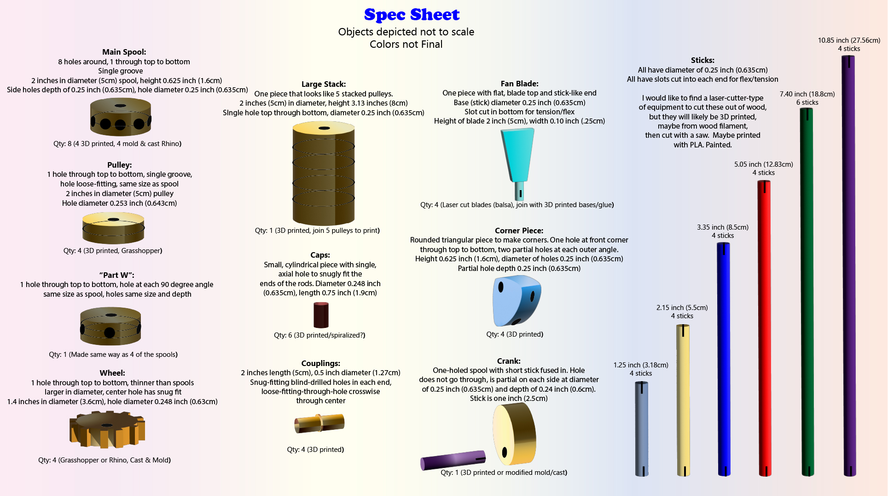

Assignment 7: Final Project Proposal

CONCEPT ONE
When final project in class, I immediately thought, "Cosplay!" As soon as class was over, I went to Etsy to seek inspiration, as I knew I wanted to make a headpiece, and I found a Medusa headpiece. I wanted to make something similar.
I started to do a sketch using Ai, since my hand drawing has degraded over the year of using digital tools to draw.
This was exciting! I deconstructed the headpiece down to parts, and began looking up the cost of meterials I would need to make it.
This is where concept 1 ended. The cost of the materials and supplies I would need was so excessive, that it was less costly just to go back to Etsy and purchase the inspiration headpiece. Time to think of a new idea.
END OF CONCEPT ONE
CONCEPT TWO
A new concept came to me almost immediately. When I was young, and to be honest - as an adult as well - I loved toys where I could construct things. One of my favorites is one most of you won't have heard of - Tinkertoys!

Tinkertoys were invented in 1914 by Charles H. Pateau, Robert Petit, and Gordon Tinker to inspire children to use their imaginations. Over time, millions of sets were sold.
Initially, the sets were made from wooden pieces. The cornerstone of the set is a wooden "spool" with holes drilled every 45 degrees around the perimeter and one through the center. Unlike the center, the perimeter holes do not go all the way through.
With differing-length sticks (painted wood in bright colors), the set was intended to be based on the Pythagorean progressive right triangle.
Other parts included wheels, caps, couplings, pulleys, and more.
INTENDED USE CONCEPT/CONTEXT

Truly, my intended use for the set of Tinkertoys I plan to fabricate is to play with them, and to fabricate new things with them. The context falls under my own nostalgia, love of toys, and love for building things.
Plus, this is a digital fabrication class, so I thought it fitting to fabricate a set of toys with which I could then fabricate things.
If you're interested in seeing a vintage set and instructions, check out this video on Youtube (4 min.).
https://youtu.be/U7_ntkgVr1Y
SPECS, TIMELINE, AND SOURCING
Happily, an article I found on Tinkertoys, from which the information in this presentation has been referenced, gave me the specs for the original Tinkertoy pieces. I may stick to them, depending on how they work with the materials I'll be using.

Tinkertoy - Standard Parts. Tinkertoy. Liquisearch. https://liquisearch.com/tinkertoy
I combined my Timeline and Breakdown of Tasks into one document. This is easier for me to follow, rather than having two documents. I made an infographic, since I am a visual person, but I started with an Excel spreadsheet to organize. As you can see, I have already started.
Should you be interested, or prefer spreadsheets to infographics, here is my original spreadsheet.
Why didn't I make a standard Gantt Chart? I find it tedious to make Gantt Charts for projects with such a short timeline, that's all. Personal preference.
Then I set out to determine the materials I would need to finish this project, and created a source list.
The cost for materials for this project is much more reasonable than Concept 1, and I decided this project is viable.
WHAT IF SOMETHING GOES WRONG???
I built in around 6 days of buffer time into my timeline, but sometimes buffer time isn't enough when things go wrong. Having two dud 3D printers this quarter has taught me lessons on developing contingency plans.
I believe this covers most possible tragedies that might befall me, but I think the most important thing is that at the first signs of trouble, to keep communication with Nadya, Junchao, and the class aware, and to ask for help!
PROGRESS SO FAR
While most of my progress thus far has been research and preparing this presentation, I have started drafting pieces in Rhino, really experimenting more than anything.
This is just a start!
SOURCE FILES:
TToySpoolTypes.3dm
TToyStick.3dm